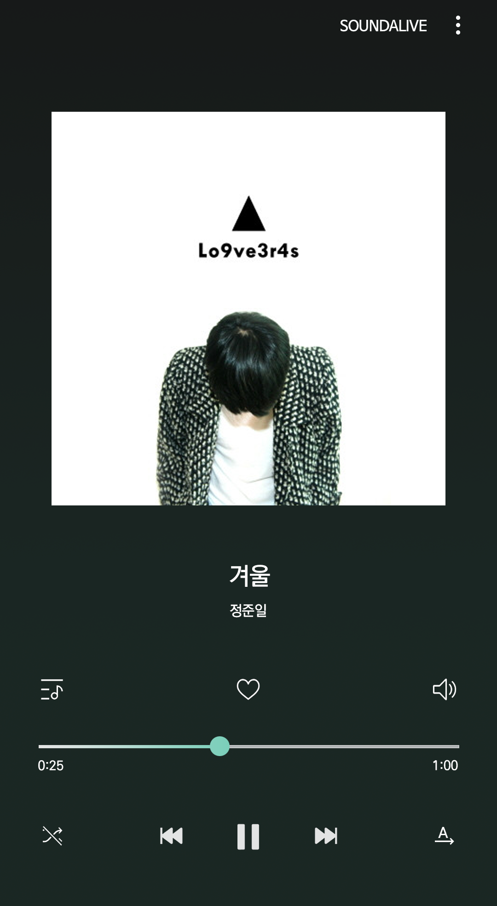

겨울음악

정준일의 1집 Lo9ve3r4s에 수록되어 있는 겨울 느낌의 곡.
첫눈 오는 이런 오후에 너에게 전화를 걸 수만 있다면 기쁠텐데
벌써 일년이 지났는데 난 아직 미련 가득해서 "쓸쓸해" 어느새 혼잣말
(시계를 되돌려) 1년 전으로 갈 수 있다면
(마음을 되돌려) 지금 우린 달라졌을까
yeah 바보 같은 소리지, 그래도 만약
너를 만나면 눈물 차 올라
바보 같은 난 아무 말 못해
말해줘 메리 메리 크리스마스, 안녕 잘 지내는거지
눈이 내리면 멍든 가슴이
모두 하얗게 다 덮여지게 될까
미안해 잘해주지 못해
후회만 가득 가득 했던, 그 크리스마스
불빛 가득한 거리거리 혼자 걸었어. 다들 행복해 보여
너는 언제나 공기처럼 있어줄 거란 착각에, 멍청히 보내,
내가 너무 미안해
(너무 흔한 얘기) 지나고 나면 너무 소중해
(항상 지나치지) 왜 그때는 모르는 걸까
지금은 다를 거야 말해주고파
너를 만나면 눈물 차 올라
바보 같은 난 아무 말 못해
말해줘 메리 메리 크리스마스, 안녕 잘 지내는거지
눈이 내리면 멍든 가슴이
모두 하얗게 다 덮여지게 될까
눈물인지 눈 때문인지
점점 너 멀리 멀리 보이던, 그 크리스마스
정말 신기한 일이야 너의
생각만으로 눈물 차 흐르니말야 Tears are falling, falling, falling
다시 너에게로 가고 싶어
무슨 일이든 할 수 있어
지금까지 삶이 모두 사라진다 해도 Girl
너를 만나면 눈물 차 올라
바보 같은 난 아무 말 못해
말해줘 메리 메리 크리스마스, 안녕 잘 지내는거지 Baby girl ooh- yeah-
눈이 내리면 멍든 가슴이
모두 하얗게 다 덮여지게 될까
미안해 잘해주지 못해
후회만 가득 가득 했던,
너를 만나면 눈물 차 올라 (눈물 차 올라)
(바보 같은 난)아무 말 못해 (아무 말 못하는 나 인걸)
메리 메리 크리스마스, 잘 지내는거지
눈이 내리면 멍든 가슴이
모두 하얗게 다 덮여지게 될까
눈물인지 눈 때문인지
점점 너 멀리 멀리 보이던, 그 크리스마스
엑소의 겨울 스페셜 앨범 '12월의 기적 (Miracles in December)'에 수록되어있는 첫눈이 오는 그리운 날을 감성적으로 표현한 곡.
스탠딩 에그의 Us라는 앨범에 수록되어 있는 곡.
어반 자카파의 3집 [03]에 수록되어 있는 겨울이 오는 것을 슬프게 표현한 곡.
Copyright 2019. Lee YeWon all rights reserved.